ASTR101 Ch 15-16
Ch 15 - The Sun: A Garden-Variety Star
The Structure and Composition of the Sun
- Studying the Sun serves the dual purpose of understanding how our solar system changes due to it as well as serving as a template for understanding far-away stars.
- Sun is ball of hot gas that is mostly ionized, and is large enough to hold 1.3 million Earths.
- While the Sun is not solid, it does have layers.
Composition of the Sun's Atmosphere
- As discussed, Sun contains same elements of Earth but in different proportions; 73% Hydrogen, 25% Helium, 2% other elements.
- Stars shown to have similar composition to Sun of Hydrogen and Helium by first woman to get PhD in U.S., Cecilia Payne-Gaposchkin, in 1925. At the time, it was thought the Sun would be made of elements in the same proportions as Earth–the idea she proved was so revolutionary, she didn't even believe her conclusion!
- Proven beyond a doubt by other studies 3 years later.
- Sun contains mostly atoms (few molecules) and is so hot that every element is in the form of plasma, gaseous, and ionized.
- This ionization means the movements all moving particles in the Sun have an associated electromagnetic radiation.
- In the 19th century, scientists observed a spectral line at 530.3 nm, which they assigned to a new material they called "coronium"—turns out it was just the emission of iron with 13 of its electrons stripped off!
The Layers of the Sun Beneath the Visible Surface
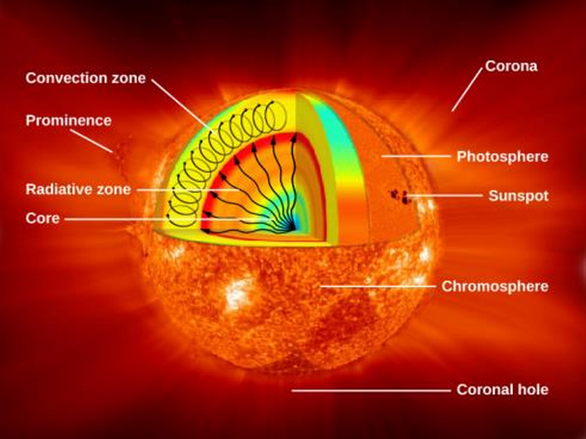
- Sun has extremely dense core which provides its nuclear energy, has the highest temperature of 15 million K, and is 20% of the size of the solar interior.
- Then we have the radiative zone, through which energy is radiated, from 25-70% of the radius to the Sun's surface. Light is transported through this zone very slowly because of its high density and low mean free path; the average length that a particle can go before colliding with another particle.
- The convective zone is the outermost layer of the solar interior. It's 200,000 km deep and transports energy out of the radiative zone through convection movements of the plasma.
The Solar Photosphere
- The photosphere is a 400 km spherical shell beyond which photons don't reach our eyes. The Solar atmosphere is see-through at the outside edge of this shell but totally opaque at the inside edge.
- The photosphere marks the distance in the Sun's atmosphere through which we can't see.
- So it represents the radius above which photons can escape (and hit our eyes, so we can see the Sun).
- Inside the photosphere, photons keep colliding with particles and don't reach our eye (due to the high density of the Sun).
- While Sun is very dense, solar atmosphere is 10% the pressure on Earth's surface.
- Solar surface appearance consists of granules (columns of hot rising gas); termed granulation.
- Granules are 700-1000 km in diameter (think Texas) and last 5-10 minutes, supergranules are 35,000 km across (think two Earths) and last 24 hours.
- Doppler analysis shows granule columns to rise at 2-3 km/s.
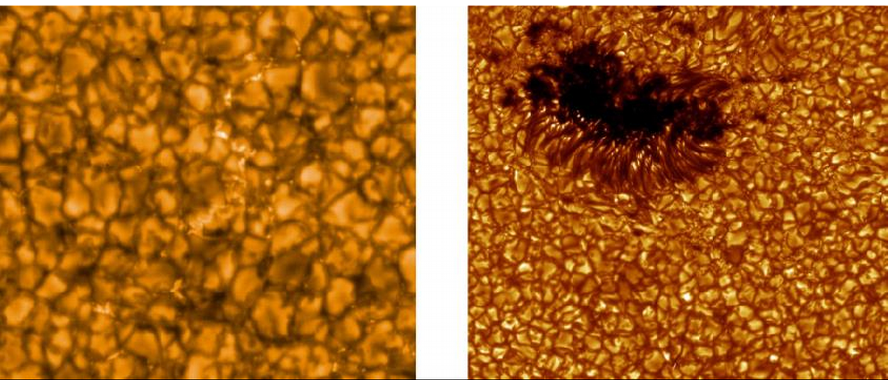
Figure 2: Granulation pattern on Sun.
The Chromosphere
- Naturally, photosphere is difficult to observe because it's mostly transparent.
- Right above the photosphere is the chromosphere, which until this century was only visible when the photosphere was covered up (eg, by the Moon in a solar eclipse), during which red fringes can be seen around the covering Moon.
- chromo-sphere (chromo means colored in Greek).
- Observations made during eclipses show the chromosphere to be 2000-3000 km thick, composed of hot gases. Red is Hydrogen's strong red spectral line!
- 1868, a new element was found at a yellow emission line, termed "Helium" (after helios, Sun, in Greek). We didn't discover Helium on Earth until 1895!
The Transition Region
- The chromosphere is a temperature of about 10,000 K.
- Above the chromosphere is the hottest part of the sun's atmosphere, the corona, where the temperature increases from 10,000 K to nearly 1,000,000 K.
- The part of the Sun where this transition in temperature occurs is called the transition region, which is only tens of kilometers thick.
- The corona is very low-density and thins out rapidly at greater heights.
- It extends far past Earth (we're technically in the Sun's corona).
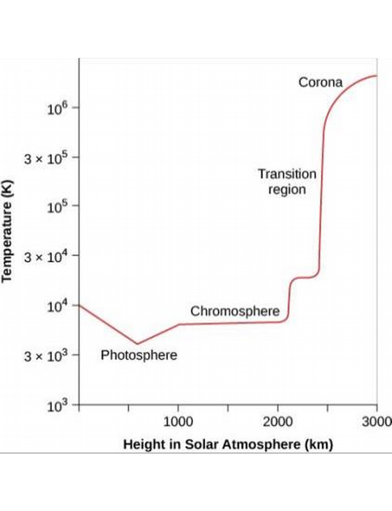
The Corona
- The corona extends millions of kilometers above the photosphere and emits half as much light as the full moon (not very bright, Sun-wise).
- The corona is best observed in a total solar eclipse, but can be viewed in space using an occulting disk, a circular material that covers up just the Sun, in a coronagraph instrument.
The Solar Wind
- The Sun's atmosphere produces solar winds; streams of charged particles (mostly protons and electrons)
- They jet out of the Sun at speeds of 400 km/s (one million mph) due to the rapid rising of the very hot gases which escape the Sun's gravity.
- Discovered by observing its effects on comets's charged tails.
- 10 million tons of material escape the Sun every year through solar winds, which is nothing to the Sun.
- Corona appears isotropic in the visible band, but shows spectacular patterns of light and dark in x-ray and UV regimes.
- Hot coronal gas is trapped (attracted) by magnetic fields, in the Sun's corona.
- Some regions are relatively cool and quiet, termed coronal holes, where gas can more easily escape unhindered by magnetic fields.
- Earth's magnetic field mostly shields us from the effects of solar winds.
- Charged particles accelerated by solar winds are guided by Earth's magnetic field to Earth's magnetic poles, where they strike air molecules causing them to glow in curtains of light called auroras.
Ch 16 - The Sun: A Nuclear Powerhouse
Sources of Sunshine: Thermal and Gravitational Energy
- What is energy?
- When you push an object, you exert energy to move it.
- Energy can be kinetic (the energy of movement) or potential (no movement, but the energy is there and can be converted to movement).
- Examples: gravitational, elastic, chemical, electric, magnetic, heat, radiation, etc.
- Temperature is the average kinetic energy of atoms in a material.
- In the 19th century, two forms of energy were known that could produce the Sun's energy radiation: gravitational and chemical.
- Turns out this doesn't account for the vast energy that the Sun has given off for billions of years. (Specifically, as early as 4 billion years ago, when geological evidence suggests there was water on Earth, which requires the heat of the Sun to be in liquid form).
Conservation of Energy
- Law of Conservation of Energy: Energy cannot be created or destroyed, but it can be transformed from form to form.
- In nineteenth century, it was believed the Sun's heat might be caused by meteorites falling into it. By conservation of energy, they found that the energy required means an entire Earth's worth of meteorites would have to hit the Sun every century, resulting in a mass increase that would change the Earth's period of orbit by 2s/year, which we would easily notice.
Gravitational Contraction as a Source of Energy
- British Physicist Lord Kelvin and German Scientist Hermann von Helmholtz suggested in mid-19th century that the Sun's outer layers might be falling inward due to gravity—i.e., that the Sun might be shrinking in size, converting gravitational potential energy to radiative energy.
- This theory suggests the outer layer falling inward, increasing pressure and density, so that atom collisions occur much more frequently, resulting in a higher temperature for the Sun.
- They calculated the necessary contraction rate to be 40 m/year, which would be undetectable.
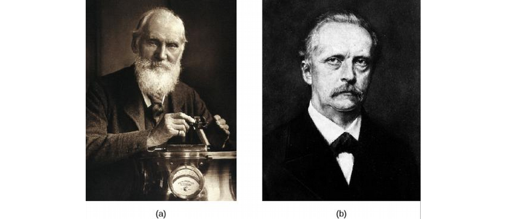
Figure 4: Lord Kelvin (left) and Hermann von Helmholtz (right).
- So is it true?
- We can calculate the amount of energy the Sun's given off in its contraction from a dilute gas cloud to its present diameter as 1042 J.
- we know the present luminosity is 4×1026 Watts (remember, Watt is a unit of power, or energy expended per second; 1 W = 1 J/s).
- How long would such a Sun keep shining at its present rate?
- 19th century science didn't yet discover that Earth's history is much more than 100 million years.
- So contraction can't be the primary source of solar energy (though it is an important source for birthing stars).
- Charles Darwin's Theory of evolution required a longer time span than this 19th-century dating of the Sun, which worried him until his death in 1882!
Mass, Energy, and the Theory of Relativity
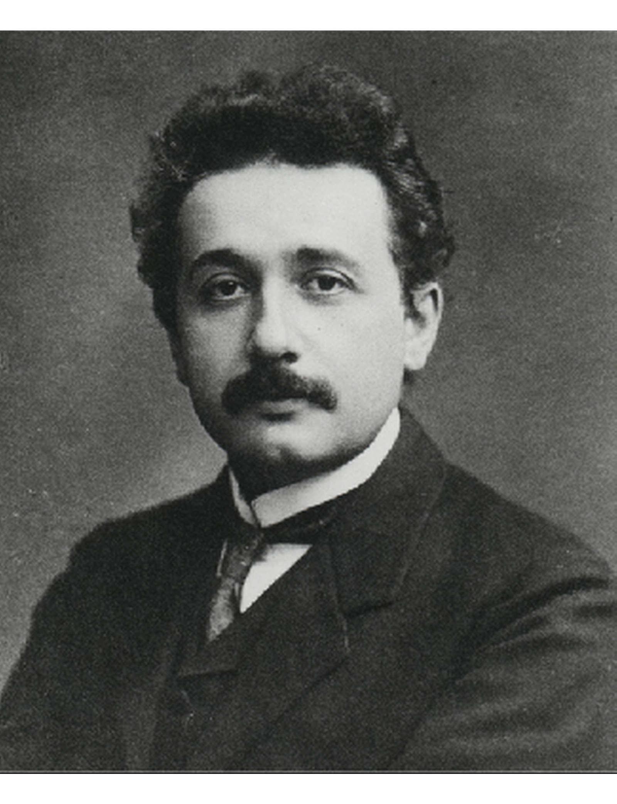
- Albert Einstein developed his theory of relativity.
- Mind-blowing. Time is nonlinear, space has a "curvature", the relative speed of light is always the same regardless of how fast you go..
- Among these results is that matter can be converted into energy;
\[ E=mc^2 \] where E is the energy, m the mass, and c the speed of light (3×108 m/s).
- This formula is a conversion formula. Mass m is equivalent to energy E in the equation.
- c is a huge number, so a small mass is equivalent to a large energy.
Elementary Particles
- We've studied protons, neutrons, and electrons. But there are more fundamental particles.
- Each particle has a corresponding anti-particle. If they hit each other, they annihilate; i.e., they disappear, and what's left is energy in the form of photons. Their charges are opposites.
- Since the universe is mostly ordinary particles, anti-particles don't survive long before annihilating.
- However, individual antiparticles are found in cosmic rays (particles that arrive at the top of Earth's atmosphere from space) and can be created in laboratories, in particle accelerators.
- In such experiments in the early 20th century, some reactions of these elementary particles seemed to violate conservation of energy.
- In 1933, physicist Wolfgang Pauli suggested that perhaps there was a particle we had not yet detected because it was so neutral termed the neutrino, the "little neutral one", which would account for the missing energy. He suggested like the photon that they had zero mass and moved at the speed of light.
- Turns out he was right, though we didn't detect a neutrino until 23 years later.
- They are difficult to find because they're so neutral, they react very weakly with electromagnetism, and since they have little to no mass, they don't interact much with gravity either.
- They can pass through a star or planet without being absorbed!
- There are three types of neutrinos; one of them may be massless.
The Atomic Nucleus
- Recall the four fundamental forces; gravitational, electromagnetic, strong nuclear force, and weak nuclear force.
- In the nucleus, particles are held together by the strong nuclear force, which is very short range (nucleus-sized) and very strong.
- When particles come together to form a nucleus, energy is released in an amount called the binding energy of that nucleus. The resulting nucleus has less mass than the sum of the mass of the particles that made it up, corresponding to a small fraction of the mass of one proton, but corresponding to plenty of energy since E=mc2.
- The binding energy increases with increasing atomic number from hydrogen (1) to iron (58), and then decreases for heavier elements.
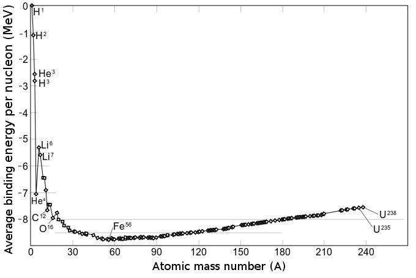
- So, iron is the most stable element because it gives up the most energy when forming.
- Atoms can combine into larger (fusion) or break into smaller (fission) atoms.
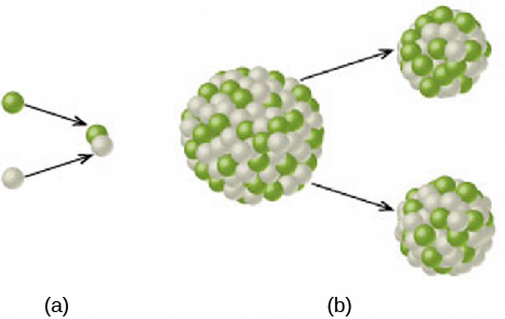
- So, energy is released in fusion of atoms with atomic number up to iron, or in fission breaking up atoms larger than iron.
Nuclear Attraction versus Electrical Repulsion
- Nucleus particles usually kept apart by very strong electrical repulsion.
- But if they get close enough, they're held together by the much, much stronger strong foce.
- So how can nucleus particles every get close enough for the strong force to take over?
- Heat!
- Two protons fuse where T>12 million K (average proton velocity of 1000 km/s, or 2,000,000 mph).
Nuclear Reactions in the Sun's Interior
- We've covered that most of the Sun's energy arises from nuclear reactions.
- The specific reaction is a three-step process that fuses four hydrogen atoms into a single helium atom.
- The helium atom is slightly less massive than the sum of the masses of the four hydrogen atom, so a lot of energy is released (E=mc2).
- Three-step nuclear process: 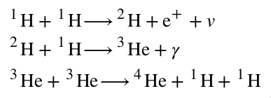
- Two protons combine to form deuterium, a neutrino, and a positron.
- We care about the deuterium, but we'll care about the neutrino later, which exits the Sun unperturbed.
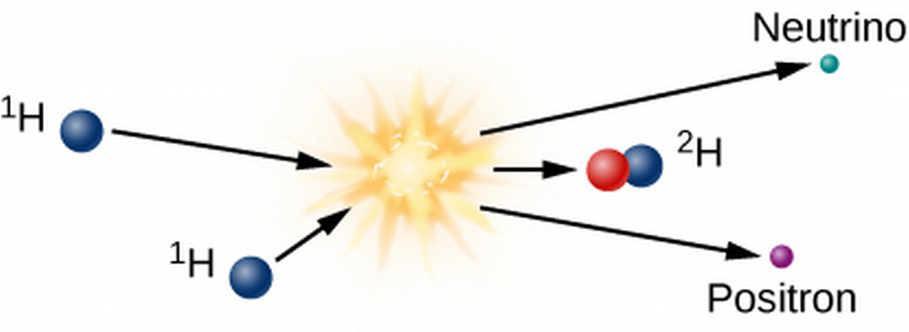
- The deuterium goes on to collide with a hydrogen, giving off light and 3-He.
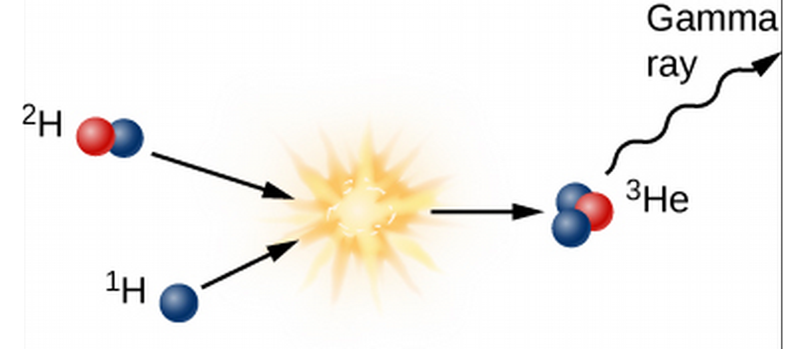
- Finally, two 3-He collide to form the Helium, also emitting two hydrogen.
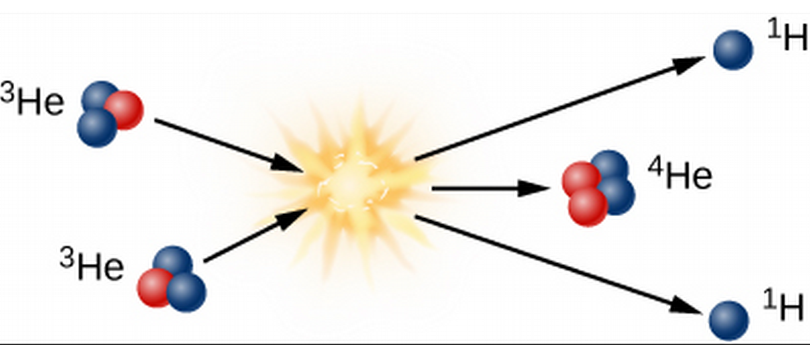
The Proton-Proton Chain
- How much energy do these release?
- Keep in mind, proton is 1837 time heavier than electron and positron.
- Average isotope mass of hydrogen and helium atoms are 1.007825 and 4.00268 u, respectively.
- u, atomic mass, is 1/12 mass of Carbon-12, and 1 u=1.660×10-27 kg.
- As far as mass is concerned, we have 4 H -> He.
- The mass lost in this reaction is 4mH-mHe=4×1.007825-4.00268=.02862 u=4.75×10-28 kg.
- E=mc2=(4.75×10-28 kg)(3×108 m/s)2=4.27×10-11 J.
- If the fusion occurs over 1 kg's worth of hydrogen atoms, how much energy is released?
- Note that the resulting Helium mass 4.00268 u is 99.29% of the initial mass of hydrogens.
- So however many hydrogen we use, we're left with 0.71% of the mass as energy.
- Then for 1 kg, we have .71×(1 kg)=.71 kg, so that E=mc2=(.71 kg)(3×108 m/s)2=6.39×1016 J.